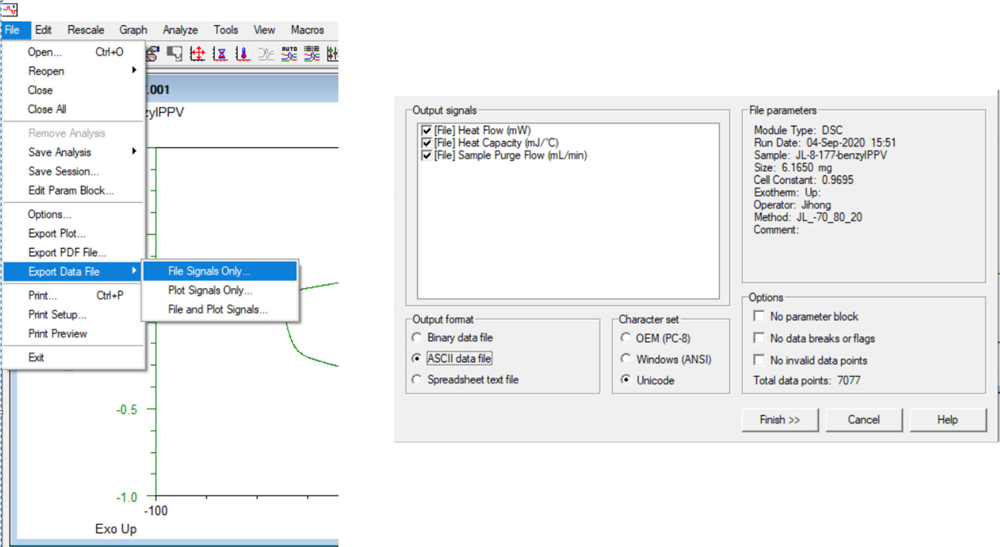
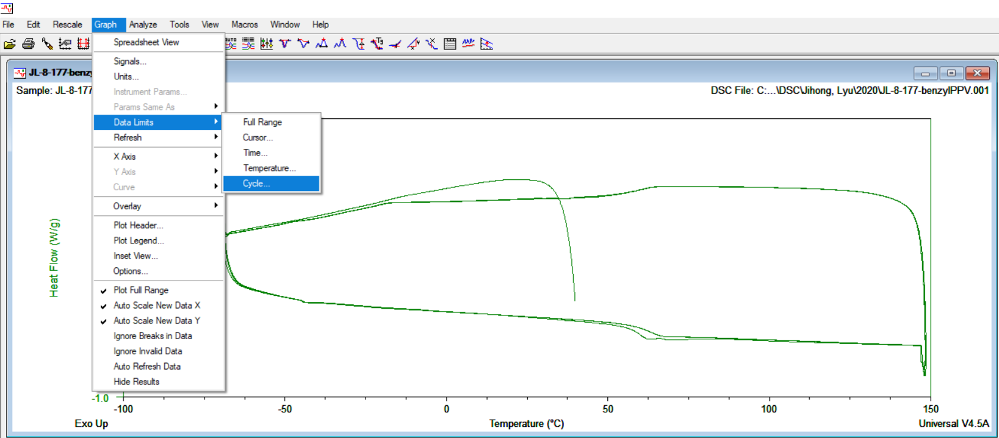
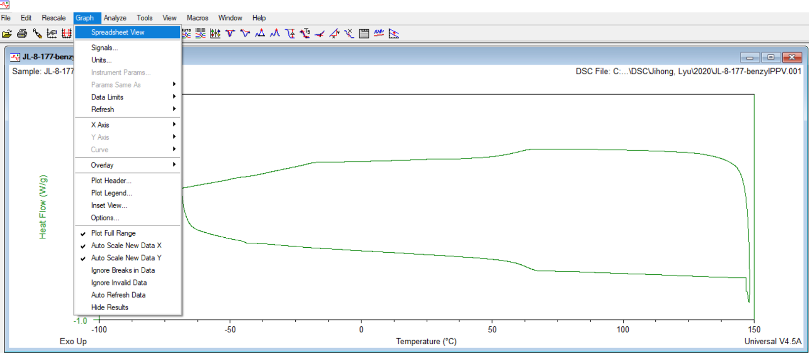
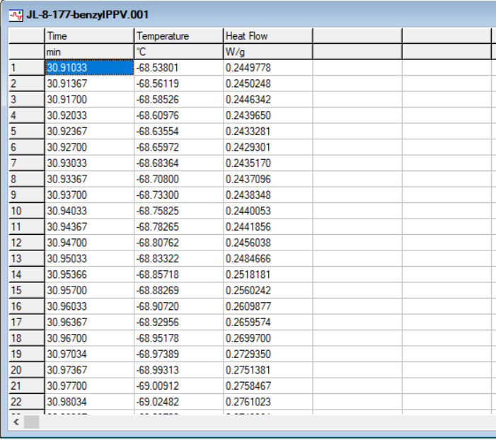

You can export data to click 'File', 'Export Data File', 'File signals only or File and Plot Signals' and ASCII data file as output format.

If you want to save a specific cycle or range, follow this procedure.
Click 'Graph' and 'Data Limits'.

You can limit your data with Cycle, Temperature, or cursor.
Click 'Graph' and "Spreadsheet view"

Now you can copy these limited values to Origin and make a figure.
